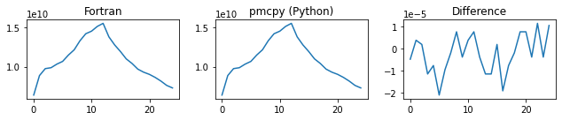
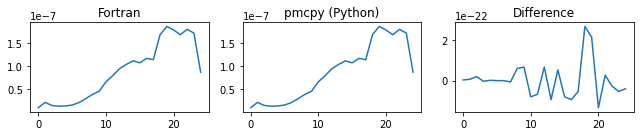
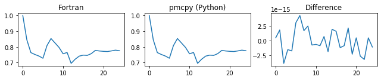
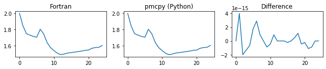
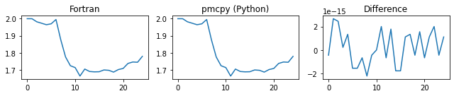
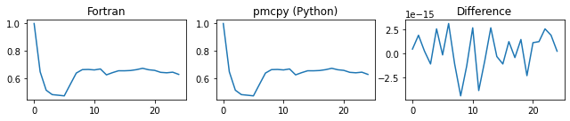
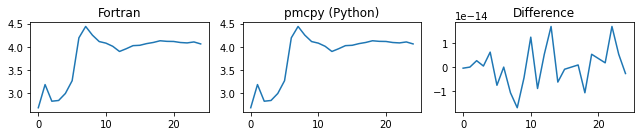
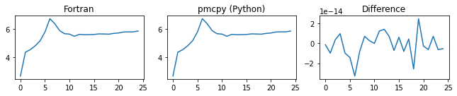

benchmarking
This script is used to compare the pmcpy results with urban_plume_process.F90
[1]:
# import necessary package
import pmcpy
import xarray as xr
import numpy as np
import pandas as pd
import matplotlib.pyplot as plt
# define the path to data
p = "../data/"
results from ``pmcpy``
[2]:
# define a dictionary to save the results
d = {"tot_num_conc": [], "tot_mass_conc":[],
"chi":[], "d_alpha":[], "d_gamma":[],
"chi_a":[], "d_alpha_a":[], "d_gamma_a":[]}
# define the surrogate groups for mixing state calculation
group_list = [["OC","BC"],
["API1","API2","LIM1","LIM2"],
["SO4","NO3","NH4"]]
# loop across scenarios using pmcpy
for i in range(1,26):
pmc = pmcpy.load_pmc(p+"/urban_plume_0001_000000"+str(i).zfill(2)+".nc")
d["tot_num_conc"].append(pmc.get_num_conc())
d["tot_mass_conc"].append(pmc.get_mass_conc(dry=False))
# calculate mixing state for grouped species with water
D_alpha, D_gamma, chi = pmc.get_mixing_state_index(group_list, diversity=True)
d["d_alpha"].append(D_alpha)
d["d_gamma"].append(D_gamma)
d["chi"].append(chi)
# calculate mixing state for all species (without water)
D_alpha_a, D_gamma_a, chi_a = pmc.get_mixing_state_index(drop_list=["H2O"], diversity=True)
d["d_alpha_a"].append(D_alpha_a)
d["d_gamma_a"].append(D_gamma_a)
d["chi_a"].append(chi_a)
compare the results from Fortran postprocessing ``urban_plume_process.F90``
[3]:
ds_b = xr.open_dataset(p+"urban_plume_process.nc")
# ======= comparison =======
for k in d:
print("######",k,"######")
fig = plt.figure(figsize=(9,2))
ax1 = fig.add_subplot(131)
pd.Series(ds_b[k].values).plot(ax=ax1)
ax1.set_title("Fortran")
ax2 = fig.add_subplot(132)
pd.Series(d[k]).plot(ax=ax2)
ax2.set_title("pmcpy (Python)")
ax3 = fig.add_subplot(133)
pd.Series(ds_b[k].values-np.array(d[k])).plot(ax=ax3)
ax3.set_title("Difference")
plt.tight_layout()
plt.show()
###### tot_num_conc ######

###### tot_mass_conc ######

###### chi ######

###### d_alpha ######

###### d_gamma ######

###### chi_a ######

###### d_alpha_a ######

###### d_gamma_a ######
